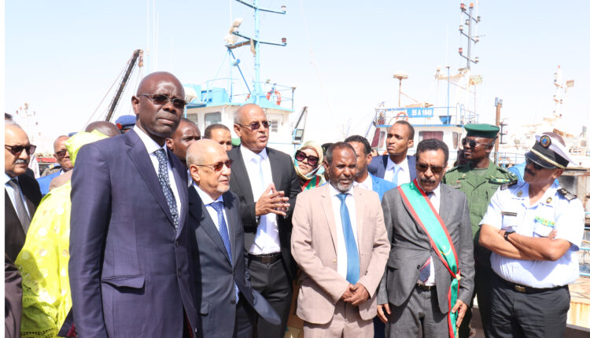

Le ministre des Pêches et de l’Economie maritime et son homologue sénégalais visitent le port de Tanit

Le ministre des Pêches et de l’Economie maritime, M. Mohamed Ould Abidine Ould Mayif, et son homologue sénégalais, M. Pape Sagna Mbaye, ont visité le port Tanit pour la pêche traditionnelle et pélagique.
Au cours de la visite, la délégation ministérielle a visité les quais d’amarrage fixes et le poste d’amarrage, où elle a reçu des explications détaillées du directeur général du port, M. Mohamed Ould Ahmed Mahmoud Ould Soueid Ahmed.
Le directeur général a également répondu aux différentes questions et préoccupations soulevées par l’اhôte sénégalais, notamment celles liées au déchargement, aux types de débarquement et au travail des équipements disponibles au port.
La visite s’est déroulée en présence du wali d’Inchiri, de l’ambassadeur du Sénégal en Mauritanie, du wali du Trarza et du reste de la délégation sénégalaise qui l’accompagne, de plusieurs responsables du ministère des Pêches et de l’Economie maritime.